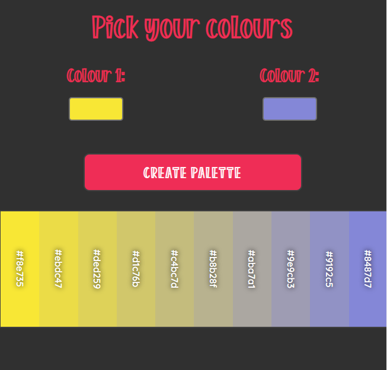

SZCSNY
<frontend>
For creating the perfect transition
I always had a love for colours and palettes and how one can transition into another. I wanted to create an app that helps me find the perfect colour for my projects.
The app basically asks the user for two colour inputs and creates a gradient between the two. I calculated even steps in the RGB codes of the colours and wrote my own functions to switch between HEX and RGB colour codes. The colours are clickable and will copy the HEX code to the clipboard. I also practiced some responsive design in the project which was a new concept for me.
Colour Palette Creator